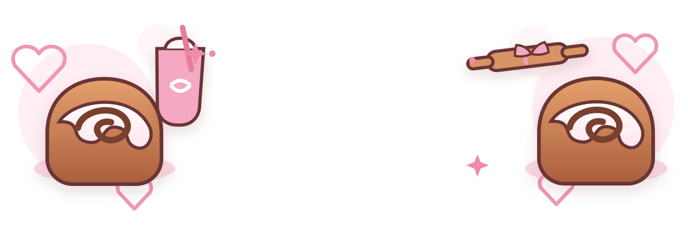
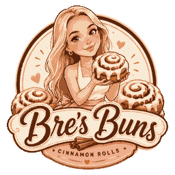

The OG ♡
Classic Cinnamon Rolls
Soft, cinnamon-swirled buns finished with a generous blanket of sweet icing.

Warm, gooey cinnamon rolls with plenty of icing and a little extra pink on top. Cute enough for the photo. Good enough to disappear before the box closes.
From classic cinnamon-roll comfort to extra-fun specialty boxes, every order is made to feel like a little treat.
Soft, cinnamon-swirled buns finished with a generous blanket of sweet icing.
Bring the cinnamon-roll energy to birthdays, brunches, work treats, showers, or your own kitchen counter.
Keep an eye out for rotating flavors, seasonal ideas, and whatever sweet thing Bre is obsessed with next.

Bre's Buns is all about making a simple favorite feel special — fluffy rolls, swirls of cinnamon, glossy icing, pretty boxes, and the kind of homemade sweetness that makes people hover around the kitchen.
The vibe is cozy, cute, unfussy, and a tiny bit extra. Exactly how dessert should be.
Ordering details are being finalized. Check back here for availability, flavors, box sizes, and pickup information.
Availability and pickup details may vary. Check ordering info before heading over.